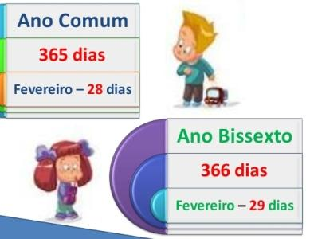

Exercício
Dificuldade
Pontos
Data limite
Créditos
Ficha04_038
Normal
4.0
26/09/2022 15:29:00
(c)M@nso 2020
Dias no Ano
Construa um algoritmo que imprima na consola o número de dias de um ano introduzido pelo utilizador.

Input
Output
2020
Ano : 2020 Ano com 366 dias
2024
Ano : 2024 Ano com 366 dias
2016
Ano : 2016 Ano com 366 dias
1907
Ano : 1907 Ano com 365 dias
1974
Ano : 1974 Ano com 365 dias
2098
Ano : 2098 Ano com 365 dias
2046
Ano : 2046 Ano com 365 dias
2000
Ano : 2000 Ano com 366 dias
1926
Ano : 1926 Ano com 365 dias
2047
Ano : 2047 Ano com 365 dias
Algorithmi 22.05 Student version (c) Antonio M@nso 2022 Instituto Politécnico de Tomar - All rights reserved